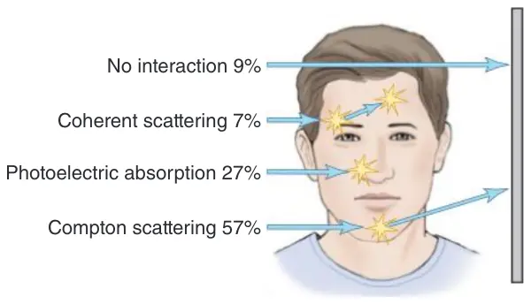

نسخه استخراجشده؛ ترجمه یا تأیید علمی انجام نشده است. وضعیت: captured
قدم 1 · theory
از فیزیک تا تصمیم بالینی
بلوک ۱ — زنجیرهی علّی، از فوتون تا خطر
این زنجیره را کامل در ذهن داشته باش، چون پرسشهای ترکیبی دقیقاً روی حلقههای آن ساخته میشوند:

از برهمکنش فوتون تا تصمیم بالینی (White & Pharoah. Oral Radiology, 9th ed. — Fig. 1.21)
الکترون در لوله شتاب میگیرد ← برمساشترالونگ فوتون میسازد ← فوتون در بافت برهمکنش میکند (فوتوالکتریک تصویر میسازد، کامپتون پراکندگی و دوز، حتی در اندامهای بیرون از میدان مانند تیروئید) ← یونیزاسیون رخ میدهد ← DNA آسیب میبیند ← یا ترمیم میشود، یا سلول میمیرد، یا جهش میماند ← واکنش بافتی یا اثر احتمالی.
و دو دستهی اثر را هرگز قاطی نکن: واکنشهای بافتی آستانه دارند و شدتشان با دوز بیشتر میشود؛ اثرات احتمالی آستانه ندارند و احتمالشان با دوز بیشتر میشود، نه شدتشان.
بلوک ۲ — کمیتهای دوز، هر کدام برای یک پرسش
پرتوگیری — چقدر هوا یونیزه شد؟
کرما — چقدر انرژی به ذرات باردار منتقل شد؟
دوز جذبی — چقدر انرژی در واحد جرم جذب شد؟
دوز معادل — با در نظر گرفتن نوع پرتو، چقدر آسیب زیستی؟
دوز مؤثر — با در نظر گرفتن حساسیت بافتها، چقدر خطر؟
و برای مقایسهی روشهای تصویربرداری، تنها یکی از اینها معنا دارد: دوز مؤثر.
بلوک ۳ — سه سطح کاهش دوز
پیش از پرتوگیری — معیارهای انتخاب: مؤثرترین کاهش دوز، نگرفتن تصویری است که لازم نیست. و تصویربرداری بر پایهی یافتههای بالینی و تاریخچه، نه بر پایهی روال اداری.
حین پرتوگیری — کولیماسیون مستطیلی، فیلتراسیون کافی، گیرندهی سریعتر، تیوب بلندتر، تنظیمات درست، و تکنیک بیخطا برای پرهیز از تکرار.
پیرامون پرتوگیری — فاصله و موقعیت درست اپراتور، پایش دوز، و برنامهی تضمین کیفیت که از پرتوگیری بیفایدهی ناشی از خرابی دستگاه جلوگیری میکند.
بلوک ۴ — پیوندهایی که پرسشهای ترکیبی از آنها ساخته میشوند
این چهار پیوند را بشناس، چون هرکدام دو یونیت را به هم وصل میکنند:
kVp ← کنتراست: kVp بالاتر یعنی انرژی میانگین بالاتر، سهم فوتوالکتریک کمتر، و کنتراست کمتر — و در همان حال دوز پوستی کمتر.
فیلتراسیون ← دوز: حذف فوتونهای کمانرژی که به تصویر نمیرسند ولی دوز میدهند.
کولیماسیون ← هم دوز، هم کیفیت: حجم پرتودیدهی کمتر یعنی پراکندگی کامپتون کمتر و در نتیجه کنتراست بهتر.
نوع گیرنده ← دوز و تکرار: گیرندهی سریعتر دوز کمتری میخواهد، ولی آسانی تکرار و عرضدید وسیع میتوانند این مزیت را ببلعند.
و جملهای که کل ماژول ۷ را در خود دارد: هر تصویر باید پرسشی بالینی داشته باشد که پاسخش تصمیم درمانی را عوض کند. اگر چنین پرسشی نیست، هیچ مقدار مهارت فنی، آن پرتوگیری را توجیه نمیکند.
قدم 2 · question
چرا تیروئید در محاسبهی دوز مؤثر یک پرتوگیری دندانی وارد میشود، حتی وقتی در میدان پرتو اولیه نباشد؟
۰۱
چون فوتونهای مشخصهی تولیدشده در جذب فوتوالکتریک بافتی به تیروئید میرسند
۰۲
چون پرتو اولیه بر اثر واگرایی هندسی در عمق، ناحیهی تیروئید را هم میپوشاند
۰۳
چون پراکندگی داخلی کامپتون به اندامهای بیرون از میدان اولیه هم میرسد
۰۴
چون ضریب وزنی بافتی تیروئید از همهی اندامها بالاتر است و همیشه در محاسبه وارد میشود
قدم 3 · question
برای مقایسهی خطر روشهای تصویربرداری با یکدیگر، دوز جذبی در سطح پوست بیمار معیار مناسبی است.
۰۱
صحیح
۰۲
غلط
قدم 4 · question
کاهش دوز در سه سطح انجام میشود: پیش از پرتوگیری با معیارهای .........، حین پرتوگیری با کولیماسیون و فیلتراسیون و گیرندهی سریعتر، و پیرامون پرتوگیری با فاصلهی درست اپراتور و تضمین کیفیت.
حروف را به ترتیب درست لمس کنید
خ
ب
ت
ا
ا
ن
نوع سؤال: ساخت کلمه · 6 خانه
حروف منبع: خ · ب · ت · ا · ا · ن
قدم 5 · question
کلینیکی از فیلم به دیجیتال مهاجرت کرده ولی دوز جمعی بیمارانش کاهش نیافته است. کدام دو سازوکار میتوانند مزیت دوزی دیجیتال را ببلعند؟
۰۱
افزایش زمان پردازش دیجیتال، و نیاز به تکرار بهدلیل خرابی مکرر کابل سنسور
۰۲
آسانی تکرار پرتوگیری با سنسور، و عرضدید وسیع همراه با بهینهسازی خودکار نرمافزار که پرتودهی بیش از نیاز را در تصویر پنهان میکند
۰۳
کاهش تفکیک فضایی دیجیتال، و نیاز به بزرگنمایی که خودش دوز اضافی میطلبد
۰۴
افزایش عمق بیت آشکارساز، و نیاز به پرتوگیری بیشتر برای پر کردن همهی سطوح خاکستری، چون سنسور با پرتوی کم تنها بخشی از دامنهی خاکستری را پر میکند
قدم 6 · question
هر تصویر باید پرسشی بالینی داشته باشد که پاسخش تصمیم درمانی را عوض کند؛ در نبود چنین پرسشی، هیچ مقدار مهارت فنی آن پرتوگیری را توجیه نمیکند.